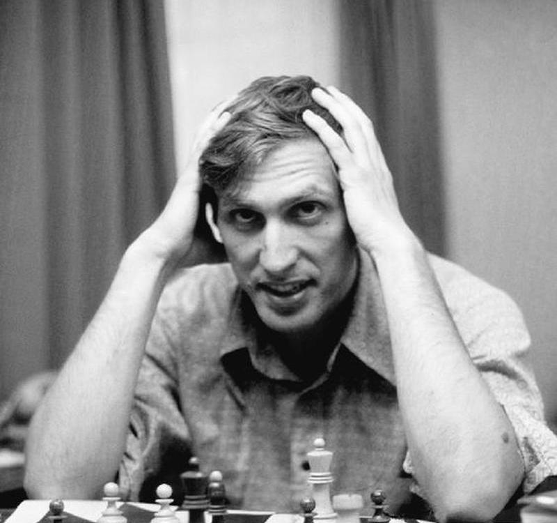

Magnus Carlson
Is a Norwegian chess grandmaster who has held the title of World Chess Champion since 2013. He is one of the greatest chess players of all time. Carlsen became a grandmaster at the age of 13, making him one of the youngest grandmasters in history.

Hikaru.N
Nakamura is renowned for his exceptional speed chess skills and has achieved great success in rapid and blitz format. He is a multiple-time United States Chess Champion and has represented the United States in numerous international chess events

Bobby Fisher
Fischer's peak years were in the 1960s and early 1970s. In 1972, he achieved global fame when he defeated Soviet World Chess Champion Boris Spassky in a highly publicized match known as the World Chess Championship.